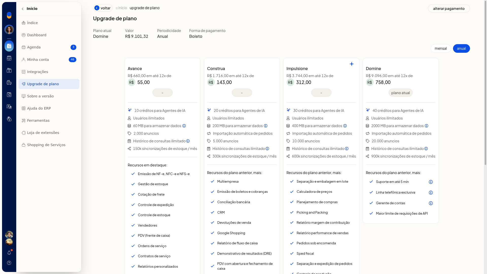
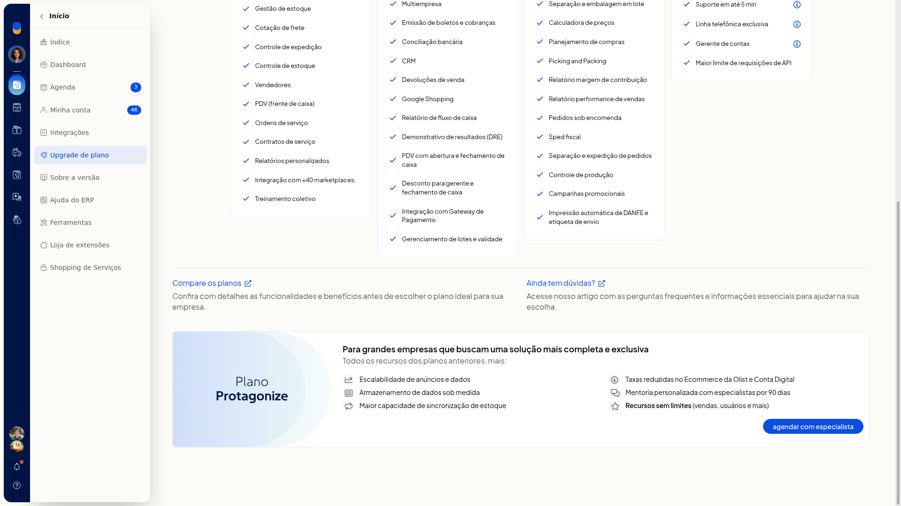

Usuários e perfis de acesso
No ERP da Olist, esta tela cadastra quem acessa o sistema, define perfil e permissões, restringe horário e IP, inclui vendedor com acesso e altera os dados do seu próprio acesso.
Em Configurações > Configurações ERP > Geral > Cadastro de usuários do sistema, a lista mostra os totais e as ações de inclusão. O limite não aparece nessa lista. Em Início > Upgrade de plano, o plano atual e os planos exibidos informam Usuários ilimitados.
Importante
- A restrição por IP vale para IPs fixos.
- adicionar permissões adicionais e editar permissões da conta digital só seguem depois que o cadastro foi salvo. Antes disso, a tela abre confirmação com Confirmar e Cancelar e não continua.
- A empresa administradora não acessa Upgrade de plano.
- Em Upgrade de plano, não use Alterar pagamento, os botões de contratação nem agendar com especialista. Essas ações são comerciais e não fazem parte deste cadastro.
Instruções
Incluir pelo cadastro
- Acesse Configurações > Configurações ERP > Geral > Cadastro de usuários do sistema.
- Na lista, busque por nome ou login se precisar localizar alguém. Os cartões mostram login, email, um indicativo de perfil (admin, gerente, vendedor ou definir perfil) e a ação gerenciar. Os totalizadores são Usuários cadastrados e Vendedores.
- Clique em incluir usuário.
- Na aba acesso do usuário, preencha os dados. Nenhum campo está marcado como obrigatório.
- Nome do usuário
- Login de acesso
- Email de acesso, no formato de email
- Email para comunicação, no formato de email
- Se quiser limitar dias e períodos, marque Acesso restrito por horário. Use as abreviações S T Q Q S, Sábado e Domingo, os períodos Manhã, Tarde e Noite e os horários Início e Final.
- Se quiser limitar a rede, informe IPs em Acesso restrito por IP, no formato IPv4, e use Adicionar IP.
- Abra a aba permissões e ações. Marque ou não Este usuário é um gerente e escolha Pode acessar contatos com o perfil.
- Se o cadastro ainda não foi salvo, você pode abrir criar perfil baseado no usuário nessa aba. adicionar permissões adicionais e editar permissões da conta digital pedem confirmação e não seguem antes do salvamento.
- Clique em salvar usuário. O cadastro fica com login, emails, restrições e permissões.
Criar um perfil
- Em Cadastro de usuários do sistema, clique em perfil de usuários ou em Mais ações > perfil de usuários.
- Se não houver perfil, a lista mostra Nenhum perfil cadastrado e o botão criar perfil. Voltar retorna à lista.
- Clique em criar perfil.
- Preencha Nome do perfil e Descrição do perfil. Nenhum dos dois está marcado como obrigatório.
- Marque as permissões nas abas Cadastros, Suprimentos, Vendas, Finanças, Serviços e Ferramentas e mais, ou use Marcar todos.
- Na aba Cadastros, as permissões são: Embalagens; Clientes e Fornecedores; editar limite de crédito; exportação de dados de contatos; Produtos; Preço promocional; Relatório de Preços dos Produtos; Categorias dos Produtos; edição de preços na lista; Serviços; Vendedores; Campanhas Promocionais; Listas de preço; Variações (grade); Nova Precificação Inteligente; Preços competitivos Mercado Livre e Amazon; Logs de atualização de produto; Pode aprovar vendas com desconto de gerente.
- Clique em salvar. O perfil fica com nome, descrição e permissões por módulo.
Criar perfil a partir do formulário
- No formulário, aba permissões e ações, clique em criar perfil baseado no usuário.
- No diálogo Novo perfil, preencha Nome e Descrição.
- Confirme o perfil. O perfil novo se baseia no cadastro em edição. Cancelar o diálogo não grava esse cadastro.
Incluir um vendedor
- Em Cadastro de usuários do sistema, clique em gerenciar vendedores, em Mais ações > gerenciar vendedores ou no totalizador Vendedores. O totalizador abre a lista em nova aba.
- Na lista, use o filtro de situação, a busca, o botão incluir vendedor e as abas todos, ativos, inativos e excluídos.
- Clique em incluir vendedor.
- Preencha a identificação. Nenhum campo está marcado como obrigatório.
- Nome, Fantasia e Código
- Tipo de Pessoa
- CNPJ, exibido quando Tipo de Pessoa é Jurídica
- Contribuinte e IE
- Preencha endereço e contatos: CEP, Cidade, UF, Endereço, Bairro, Número, Complemento, Telefone, Celular e Email (formato de email). Em UF, há Selecione, as UFs e EX.
- Defina Situação, Depósito, E-mail para comunicações (formato de email) e Usuário do Sistema.
- Se precisar, marque Acesso restrito por horário e Acesso restrito por IP.
- Escolha Pode acessar contatos com o perfil e os módulos de acesso do vendedor.
- Defina Regras para liberação de comissões, Comissionamento, Alíquota de comissão e Observações. Marque ou não Desconsiderar comissionamento por linhas de produto, incluir produtos não cadastrados e Pode emitir cobranças.
- Clique em salvar. O vendedor fica com dados cadastrais, vínculo de acesso e regra de comissão.
Alterar senha ou código
- Acesse Configurações > Configurações ERP > Geral > Alterar dados do usuário.
- Use Alterar senha ou Alterar código, conforme a alteração.
- Na verificação em duas etapas, preencha a senha pedida para chegar à confirmação. Senha, código ou etapa de verificação do seu acesso ficam prontos para confirmação.
Consultar o limite no upgrade de plano
-
Com Início aberto, clique em Upgrade de plano.
-
Localize Plano atual. No plano Domine, e também nos cartões Avance, Construa e Impulsione, o item Usuários ilimitados aparece na lista de recursos.

-
Role até Para grandes empresas que buscam uma solução mais completa e exclusiva (Plano Protagonize) e leia Recursos sem limites (vendas, usuários e mais). Os planos listados não exibem um teto numérico de acessos.

Informações adicionais
Perfis de contato no acesso
Pode acessar contatos com o perfil oferece Qualquer perfil de contato, Outro, Cliente, Fornecedor, Vendedor, Transportador e Funcionário.
Opções do vendedor
- Tipo de Pessoa oferece Jurídica, Física, Estrangeiro e Estrangeiro no Brasil. Jurídica vem selecionada.
- Situação oferece Ativo com acesso ao sistema, Ativo, Inativo, Sem Movimento e Excluído.
- Perfis de contato: Qualquer perfil de contato, Cliente, Fornecedor, Vendedor, Transportador, Funcionário e Outro.
- Módulos: Clientes, Comissões, CRM, Pedidos de Venda, PDV, Propostas comerciais, Relatório de Preços de Produtos, Performance de Vendas e Cotação de fretes.
- Comissionamento oferece alíquota fixa e conforme descontos. No formulário vazio, alíquota fixa vem selecionada.
- Regras para liberação de comissões oferece parcial por parcelas, integral no faturamento, integral após a 1ª parcela e 50% no faturamento mais o restante nas parcelas. parcial por parcelas vem selecionada.
O que Mais ações reúne
Mais ações repete perfil de usuários e gerenciar vendedores. Essas telas não trazem importação por planilha nem ativação de integração.